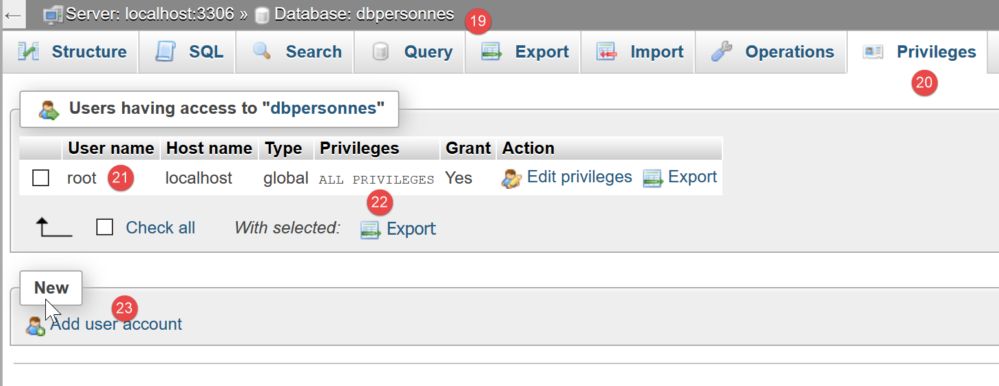
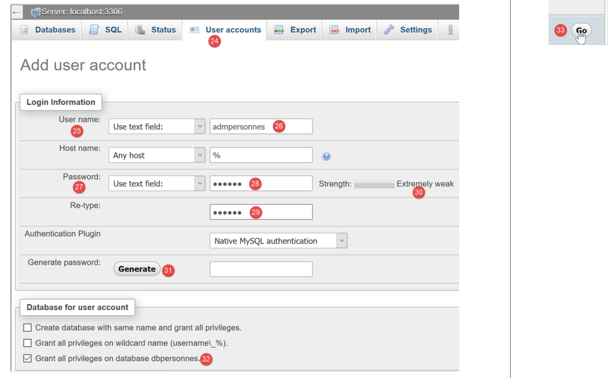
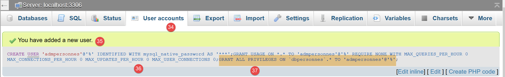
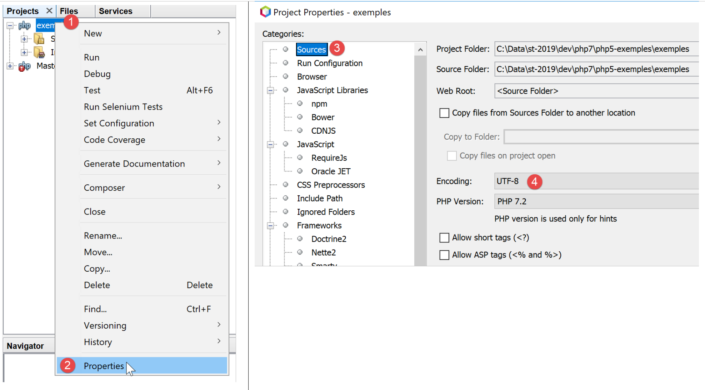

12. Uso de SGBD MySQL

Ahora vamos a escribir scripts PHP utilizando una base de datos MySQL:

En la arquitectura anterior, el script PHP (1) no se comunica directamente con el SGBD (Sistema de Gestión de Bases de Datos) (3). Se comunica con un intermediario denominado controlador de SGBD o también controlador de SGBD. PHP proporciona una interfaz estándar para estos controladores, la interfaz PDO (PHP Data Objects). Esta interfaz está implementada por diferentes clases adaptadas a cada SGBD: una clase para el SGBD MySQL, otra para el SGBD PostgreSQL… Para cambiar de SGBD, se cambia de controlador:

El controlador PDO aísla el script PHP (1) del SGBD (3, 6). Dado que estos controladores implementan una interfaz estándar, cabe esperar que el script PHP (1) no cambie si se pasa de SGBD MySQL (3) a SGBD PostgreSQL (6). En la realidad, este ideal no existe. De hecho, para comunicarse con el SGBD, el script PHP envía órdenes SQL (Standard Query Language). Se trata de un lenguaje implementado por todos los SGBD, pero que es incompleto. Por ello, los SGBD le han añadido órdenes propias. Esta es una de las principales causas de incompatibilidad entre los SGBD. Por otra parte, los tipos de datos que se pueden utilizar en las bases de datos pueden variar de un SGBD a otro. Así, PostgreSQL admite un número de tipos de datos mucho mayor que SGBD y MySQL. Esta es una segunda causa de incompatibilidad. Otra causa es la gestión de las claves primarias automáticas (generadas por el SGBD): prácticamente cada SGBD tiene su propia política. Etc… Las causas de incompatibilidad son numerosas.
Si se quiere evitar reescribir el script PHP (1) pasando de MySQL (3) a PostgreSQL (6), normalmente hay que insertar una nueva capa entre el script PHP (1) y el controlador PDO (2, 5), cuya función será eliminar las incompatibilidades entre los dos SGBD. Sin embargo, en los casos sencillos con los que nos vamos a encontrar, esta capa adicional no será necesaria.
Ahora vamos a utilizar el SGBD MySQL. Este se incluye en el paquete Laragon (véase el enlace del párrafo).
Si el lector es novato en el concepto de base de datos y del lenguaje SQL, puede consultar el documento [http://sergetahe.com/cours-tutoriels-de-programmation/cours-tutoriel-sql-avec-le-sgbd-firebird/]. Este documento utiliza Firebird y no MySQL, pero ofrece los fundamentos de las bases de datos y del lenguaje SQL. Al igual que MySQL, Firebird dispone de una versión de uso libre y de bajo consumo de memoria.
12.1. Creación de una base de datos
A continuación, mostramos cómo crear una base de datos y un usuario MySQL con la herramienta Laragon.

- una vez iniciado, Laragon [1] se puede administrar desde un menú [2];
- en [3-5], se instala la herramienta de administración de MySQL si aún no se ha instalado;

- en [6], se inicia el servidor web Apache, así como SGBD y MySQL;
- en [7], se inicia el servidor Apache;
- en [8], se inicia SBD MySQL;

- en [8-10], se crea una base de datos que se denomina [dbpersonnes] [11]. Vamos a crear una base de datos de personas;

- en [11], vamos a gestionar la base de datos que acabamos de crear;

- la operación [Bases de données] envía una solicitud web a URL [http://localhost/phpmyadmin]. Es el servidor web Apache de Laragon el que responde. URL [http://localhost/phpmyadmin] es URL de la utilidad [phpMyAdmin] que hemos instalado anteriormente [5]. Esta utilidad permite gestionar las bases de datos MySQL;
- Por defecto, las credenciales de inicio de sesión del administrador de la base de datos son: root [13] sin contraseña [14];

- en [16], la base de datos que hemos creado anteriormente;

- por ahora tenemos una base [dbpersonnes] [17] que está vacía [18];
Creamos un usuario [admpersonnes] con la contraseña [nobody] que tendrá todos los derechos sobre la base de datos [dbpersonnes]:

- en [19], nos situamos en la base [dbpersonnes];
- en [20], seleccionamos la pestaña [Privileges];
- en [21-22], vemos que el usuario [root] tiene todos los derechos sobre la base [dbpersonnes];
- en [23], se crea un nuevo usuario;

- en [25-26], el usuario tendrá el identificador [admdbpersonnes];
- en [27-29], su contraseña será [nobody];
- en [30], phpMyAdmin indica que la contraseña es muy débil (fácil de descifrar). En producción, es preferible generar una contraseña segura con [31];
- en [32], se indica que el usuario [admdbpersonnes] debe tener todos los derechos sobre la base [dbpersonnes];
- en [33], se validan los datos proporcionados;

- en [35], phpMyAdmin indica que se ha creado el usuario;
- en [36], la orden SQL que se ha emitido en la base;
- en [37], el usuario [admpersonnes] tiene todos los derechos sobre la base de datos [dbpersonnes];
Ahora tenemos:
- una base de datos MySQL [dbpersonnes];
- un usuario [admpersonnes/nobody] que tiene todos los derechos sobre esta base de datos;
Vamos a escribir scripts PHP para explotar la base de datos. PHP dispone de diversas bibliotecas para gestionar las bases de datos. Utilizaremos la biblioteca PDO (PHP Data Objects), que se intercala entre el código PHP y el SGBD:

La biblioteca PDO permite que el script PHP se abstraiga de la naturaleza exacta del SGBD utilizado. Así, en el ejemplo anterior, el SGBD MySQL puede sustituirse por el SGBD PostgreSQL con un impacto mínimo en el código del script PHP. Esta biblioteca no está disponible de forma predeterminada. Se puede comprobar su disponibilidad de la siguiente manera:

- en [1-4], se comprueban las extensiones PDO activas;
- en [5], se ve que la extensión PDO para SGBD y MySQL está activa. Las demás no lo están. Bastaría con hacer clic en ellas para activarlas;
Otra forma de activar una extensión es modificar directamente el archivo [php.ini] (párrafo del enlace) que configura PHP:

- en [1], la extensión PDO de MySQL está activada;
- en [2], la extensión PDO de Firebird está desactivada;
Después de modificar el archivo [php.ini], hay que reiniciar el PHP de Laragon para que se apliquen los cambios.
12.2. Conexión a una base de datos MySQL
La conexión a un SGBD se realiza mediante la creación de un objeto PDO. El constructor admite diferentes parámetros:
El significado de los parámetros es el siguiente:
$dsn | (Data Fuente Name) es una cadena que especifica la naturaleza del SGBD y su ubicación en Internet. La cadena «mysql:host=localhost» indica que se trata de un SGBD MySQL que opera en el servidor local. Esta cadena puede incluir otros parámetros, en particular el puerto de escucha del SGBD y el nombre de la base de datos a la que se desea conectarse: «mysql:host=localhost:port=3306:dbname=dbpersonnes»; |
$user | identificador del usuario que se conecta; |
$passwd | su contraseña; |
$driver_options | una matriz de opciones para el controlador del SGBD; |
Solo el primer parámetro es obligatorio. El objeto así creado servirá de soporte para todas las operaciones realizadas en la base de datos a la que se ha conectado. Si no se ha podido crear el objeto PDO, se lanza una excepción de tipo PDOException.
A continuación se muestra un ejemplo de conexión [mysql-01.php]:
<?php
// conexión a una base de datos local MySql
// la identidad del usuario es (admpersonnes,nobody)
const ID = "admpersonnes";
const PWD = "nobody";
const HOTE = "localhost";
try {
// conexión
$dbh = new PDO("mysql:host=".HOTE, ID, PWD);
print "Connexion réussie\n";
// cierre de la conexión
$dbh = NULL;
} catch (PDOException $e) {
print "Erreur : " . $e->getMessage() . "\n";
exit();
}
Resultados:
Comentarios
- línea 11: la conexión a un SGBD se realiza mediante la construcción de un objeto PDO. El constructor se utiliza aquí con los siguientes parámetros:
- una cadena que especifica la naturaleza del SGBD y su ubicación en Internet. La cadena «mysql:host=localhost» indica que se trata de un SGBD MySQL que opera en el servidor local. No se ha especificado el puerto. En ese caso, se utiliza el puerto 3306 por defecto. Tampoco se indica el nombre de la base de datos. Se establecerá entonces una conexión con el SGBD MySQL, y la selección de una base concreta se realizará más tarde;
- un nombre de usuario;
- su contraseña;
- línea 14: el cierre de la conexión se realiza eliminando el objeto PDO creado inicialmente;
- línea 15: la conexión a un SGBD puede fallar. En ese caso, se lanza una excepción de tipo PDOException. Esta deriva de la excepción PHP [RuntimeException];
- línea 16: se muestra el mensaje de error de la excepción;
Volvamos a ejecutar el script introduciendo una contraseña errónea en la línea 6. El resultado es el siguiente:
Erreur : SQLSTATE[HY000] [1045] Access denied for user 'admpersonnes'@'localhost' (using password: YES)
12.3. Creación de una tabla
El script [mysql-02.php] muestra la creación de una tabla en una base de datos:
<?php
// identidad de la base de datos
const DSN = "mysql:host=localhost;dbname=dbpersonnes";
// credenciales del usuario
const ID = "admpersonnes";
const PWD = "nobody";
try {
// conexión a la base de datos MySql
$connexion = new PDO(DSN, ID, PWD);
// eliminación de la tabla personas si existe
$sql = "drop table personnes";
$connexion->exec($sql);
// creación de la tabla «personas»
$sql = "create table personnes (prenom varchar(30) NOT NULL, nom varchar(30) NOT NULL, age integer NOT NULL, primary key(nom,prenom))";
$connexion->exec($sql);
} catch (PDOException $ex) {
// visualización de error
print "Erreur : " . $ex->getMessage() . "\n";
} finally {
// se desconecta si es necesario
$connexion = NULL;
}
// fin
print "Terminé\n";
exit;
Comentarios
- línea 11: conexión a la base de datos. Esto es siempre lo primero que hay que hacer. El resultado de la conexión es un objeto [PDO] a través del cual se realizarán las operaciones en la base de datos;
- línea 13: la orden SQL [drop table personnes] eliminará la tabla [personnes] de la base de datos [dbpersonnes]. Si la tabla [personnes] no existe, no se produce ningún error;
- línea 14: ejecución de la orden SQL anterior en la base de datos [dbpersonnes]. Esta ejecución puede iniciar una [PDOException] que será interceptada en la línea 18;
- línea 16: esta instrucción SQL crea una tabla [personnes]. Una tabla contiene filas y columnas. Las columnas conforman lo que se denomina la estructura de la tabla. Las filas conforman el contenido de la tabla. Una base de datos puede contener una o varias tablas. La tabla [personnes] tendrá aquí tres columnas:
- nombre: el nombre de una persona en forma de cadena de hasta 30 caracteres;
- apellido: el apellido de esa misma persona en forma de cadena de hasta 30 caracteres;
- edad: la edad de la persona en forma de número entero;
- el atributo NOT NULL en una columna exige que la columna tenga un valor. No asignarle ninguno provoca un [PDOException];
- [primary key(nom,prenom)] establece una clave primaria en la tabla [personnes]. Una clave primaria tiene un valor único para cada fila de la tabla. En este caso, la clave primaria se obtendrá concatenando las columnas [nom] y [prenom] de la fila. Esta restricción hace que en la tabla no puedan aparecer dos personas con el mismo nombre y apellido, es decir, dos homónimos. Crear un homónimo de una persona en la tabla provoca un error [PDOException];
- línea 17: ejecución de la orden SQL en la base de datos [dbpersonnes];
- línea 20: si se produce un [PDOException], se muestra el mensaje de error asociado;
- líneas 21-24: se pasa a la cláusula [finally] en todos los casos, haya excepción o no, para cerrar la conexión con la base de datos (línea 23);
Resultados:
Si la ejecución del script se realiza sin errores, se puede ver la presencia de la tabla en phpMyAdmin:


- en [3], la base de datos;
- en [4], la tabla mostrada;
- en [5], la estructura de las tablas se muestra en la pestaña [Structure];
- en [6-8], las tres columnas de la tabla;
- en [9], ninguna de las tres columnas puede estar vacía;

- en [10], la lista de índices de la tabla. Un índice permite encontrar en la tabla las filas que tienen dicho índice, más rápido que si se recorrieran secuencialmente las filas de la tabla. La clave primaria siempre forma parte de los índices, pero un índice puede no ser una clave primaria;
- en [11], el índice es aquí la clave primaria;
- en [12], el índice está formado por las columnas [nom, prenom] de cada fila;
Ahora, veamos qué ocurre si creamos errores, respectivamente, en el nombre de la base de datos, el nombre del usuario y su contraseña:
Si introducimos un nombre de base de datos inexistente:
Erreur : SQLSTATE[HY000] [1044] Access denied for user 'admpersonnes'@'%' to database 'dbpersonnes2'
Si se introduce un nombre de usuario inexistente:
Erreur : SQLSTATE[HY000] [1045] Access denied for user 'admpersonnes2'@'localhost' (using password: YES)
Si introducimos una contraseña incorrecta:
Erreur : SQLSTATE[HY000] [1045] Access denied for user 'admpersonnes'@'localhost' (using password: YES)
12.4. Rellenar una tabla
Vamos a escribir un script PHP que ejecute las órdenes SQL que se encuentran en el siguiente archivo de texto [creation.txt]:
Comentarios
- el lenguaje SQL (Structured Query Language) no distingue entre mayúsculas y minúsculas en los comandos SQL;
- línea 1: se elimina la tabla [personnes] si existe;
- línea 2: se indica al servidor MySQL que se le van a enviar caracteres codificados en UTF-8. Esta orden SQL, específica de MySQL, es necesaria aquí, por ejemplo, para que la línea 7, la «é» de Géraldine, aparezca en la base de datos. Si no se incluye la línea 2, la «é» se traducirá en una secuencia de dos caracteres extraños. El cliente es el script PHP escrito en Netbeans. Este, a su vez, codifica los archivos en UTF-8 y [1-4] que se muestran a continuación:

- línea 3: creación de la tabla [personnes] con las tres columnas (nombre, apellidos, edad) y la clave primaria (apellidos, nombre);
- líneas 4-10: inserción de 7 filas en la tabla [personnes];
- línea 6: esta orden de inserción debería fallar, ya que intenta la misma inserción que la línea 5. La restricción de la clave primaria debería impedir esta inserción: no puede haber dos personas con el mismo nombre y apellido;
- línea 10: esta orden de inserción debería fallar, ya que intenta la misma inserción que la línea 9;
El script PHP encargado de ejecutar las órdenes SQL de este archivo de texto es el siguiente [mysql-03.php]:
<?php
// identidad de la base de datos
const DSN = "mysql:host=localhost;dbname=dbpersonnes";
// credenciales del usuario
const ID = "admpersonnes";
const PWD = "nobody";
// identidad del archivo de texto de comandos SQL a ejecutar
const SQL_COMMANDS_FILENAME = "creation.txt";
// apertura de conexión a la base MySql
try {
$connexion = new PDO(DSN, ID, PWD);
} catch (PDOException $ex) {
// visualización de error
print "Erreur : " . $ex->getMessage() . "\n";
exit;
}
// se desea que, ante cada error de SGBD, se lance una excepción
$connexion->setAttribute(PDO::ATTR_ERRMODE, PDO::ERRMODE_EXCEPTION);
// ejecución del archivo de órdenes SQL
$erreurs = exécuterCommandes($connexion, SQL_COMMANDS_FILENAME, TRUE, FALSE);
// cierre de la conexión
$connexion = NULL;
//visualización del número de errores
printf("\n-----------------------\nIl y a eu %d erreur(s)\n", count($erreurs));
for ($i = 0; $i < count($erreurs); $i++) {
print "$erreurs[$i]\n";
}
// se ha completado
print "Terminé\n";
exit;
// ---------------------------------------------------------------------------------
function exécuterCommandes(PDO $connexion, string $SQLFileName, bool $suivi = FALSE, bool $arrêt = TRUE): array {
// utiliza la conexión $connexion
// ejecuta los comandos SQL contenidos en el archivo de texto SQLFileName
// este archivo es un archivo de comandos SQL que se ejecutarán a razón de uno por línea
// si $suivi=1, entonces cada ejecución de un comando SQL se muestra con un mensaje que indica si se ha realizado con éxito o ha fallado
// si $arrêt=1, la función se detiene ante el primer error que encuentre; de lo contrario, ejecuta todos los comandos sql
// la función devuelve una matriz (número de errores, error1, error2…)
// se comprueba la presencia del archivo SQLFileName
if (!file_exists($SQLFileName)) {
return ["Le fichier [$SQLFileName] n'existe pas"];
}
// ejecución de las consultas SQL contenidas en SQLFileName
// se colocan en una tabla
$requêtes = file($SQLFileName);
// ¿error?
if ($requêtes === FALSE) {
return ["Erreur lors de l'exploitation du fichier SQL [$SQLFileName]"];
}
// ejecutamos las consultas una por una; al principio no hay errores
$erreurs = [];
$i = 0;
$fini = FALSE;
while ($i < count($requêtes) && !$fini) {
// se recupera el texto de la consulta
// trim eliminará el carácter de fin de línea
$requête = trim($requêtes[$i]);
// ¿Consulta vacía?
if (strlen($requête) == 0) {
// se ignora la consulta y se pasa a la siguiente
$i++;
continue;
}
try {
// ejecución de la consulta: puede lanzarse una excepción
$connexion->exec($requête);
// ¿Seguimiento en pantalla o no?
if ($suivi) {
print "$requête : Exécution réussie\n";
}
} catch (PDOException $ex) {
// se ha producido un error
addError($erreurs, $requête, $ex->getMessage(), $suivi);
// ¿Se detiene?
$fini = $arrêt;
}
// siguiente consulta
$i++;
}
// resultado
return $erreurs;
}
function addError(array &$erreurs, string $requête, string $msg, bool $suivi): void {
// se añade un mensaje de error
$msg = "$requête : Erreur (" . $msg . ")";
$erreurs[] = $msg;
// ¿Seguimiento en pantalla o no?
if ($suivi) {
print "$msg\n";
}
}
Comentarios
- La función [exécuterCommandes] (líneas 36-89) se encarga de ejecutar los comandos SQL que encuentra en el archivo de texto [$SQLFileName] (parámetro 2). Para ejecutarlos, utiliza la conexión abierta [$connexion] (parámetro 1) con el servidor MySQL. El tercer parámetro [$suivi] es un valor booleano que controla las visualizaciones en pantalla: en TRUE, la orden SQL ejecutada se muestra en pantalla indicando si ha tenido éxito o ha fallado; de lo contrario, la ejecución de la orden SQL es silenciosa. El cuarto parámetro [$arrêt] controla qué se debe hacer cuando falla un comando SQL: en TRUE, indica que la ejecución de los comandos SQL debe detenerse; de lo contrario, esta continúa. La función [exécuterCommandes] devuelve una matriz de mensajes de error, vacía si no se han producido errores;
- líneas 11-18: se abre la conexión a la base de datos MySQL [dbpersonnes]. Si la apertura falla, se muestra un mensaje de error y se detiene el proceso (líneas 14-18);
- línea 22: se pasa una conexión abierta a la función [exécuterCommandes]. Se cerrará al volver de la función (línea 24);
- línea 20: antes de pasarla a la función [exécuterCommandes], se configura la conexión. En caso de error, las operaciones SQL con un objeto [PDO] pueden devolver el valor booleano FALSE (valor por defecto) o lanzar una excepción. La línea 20 opta por este segundo caso. De hecho, es fácil «olvidarse» de comprobar el resultado booleano de la ejecución de una orden SQL. Esto producirá un error más adelante, pero en otra parte del código, lo que dificultará la localización de su origen. En el caso de una excepción no gestionada (ausencia de catch), la excepción ascenderá por el código hasta encontrar un catch o hasta llegar al intérprete PHP, que interceptará la excepción. En este caso, se muestran la naturaleza de la excepción y su lugar de origen en el código;
- línea 22: se llama a la función [exécuterCommandes] para ejecutar el archivo de órdenes SQL [$SQLFileName];
- líneas 45-47: se comprueba que el archivo de órdenes SQL existe. Si no es así, se registra el error y se devuelve este resultado;
- línea 51: se colocan las órdenes SQL en una tabla [$requêtes]. Líneas 53-55: si la operación falla, se devuelve una tabla de errores con un único mensaje;
- línea 57: se acumulan los errores en la matriz [$erreurs];
- línea 58: n.º de la consulta;
- línea 59: el booleano [$fini] controla la ejecución de las órdenes SQL de la tabla [$requêtes]. Cuando pasa a TRUE, la ejecución se detiene;
- línea 60: se recorre todas las consultas;
- línea 63: se extrae el texto de la orden SQL n.º i. La función [trim] eliminará los espacios que preceden y siguen al texto de la orden SQL. Por «espacios» se entiende el espacio en blanco \b, el retorno de carro \r, el carácter de fin de línea \n, el salto de página \f, la tabulación \t… Lo que nos importa aquí es que el carácter de fin de línea del texto SQL desaparecerá;
- líneas 65-69: si el texto SQL está vacío, se ignora la solicitud y se pasa a la siguiente;
- línea 72: se envía la orden SQL al servidor MySQL. El método [PDO::exec] lanzará una excepción si la ejecución falla. Recordamos que este comportamiento se debe a la configuración realizada en la línea 20;
- línea 79: el mensaje de error se añade a la tabla de errores;
- línea 81: se establece el valor booleano [$fini] que controla el bucle. Si el parámetro [$arrêt] (línea 36) es igual a TRUE, se debe detener el bucle;
- líneas 74-76: si la ejecución de la orden SQL se ha realizado correctamente, se muestra en pantalla si el parámetro [$suivi] (línea 36) es igual a TRUE;
- línea 87: una vez ejecutadas todas las órdenes SQL, se devuelve la tabla de errores [$erreurs];
La función [adError] de las líneas 90-97 permite añadir un error a la tabla de errores [$erreurs]:
- línea 90: la función recibe 4 parámetros:
- el parámetro [$erreurs] se pasa por referencia. De hecho, queremos actuar sobre la tabla que se pasa como parámetro y no sobre una copia de la misma;
- el parámetro [$requête] es el texto SQL de la orden que ha fallado;
- el parámetro [$msg] es el mensaje de error relacionado con la orden que ha fallado;
- el valor booleano [$suivi] indica si el mensaje de error debe mostrarse ($suivi=TRUE) o no ($suivi=FALSE) en la consola;
La función [exécuterCommandes] es llamada por el script de las líneas 3-33:
- líneas 11-18: se establece una conexión con la base de datos MySQL [dbpersonnes];
- línea 20: se configura la conexión;
- línea 22: a continuación se ejecuta el archivo de comandos SQL;
- línea 24: se cierra la conexión;
- líneas 26-29: se muestran los errores devueltos por la función [exécuterCommandes];
Resultados en pantalla:
drop table if exists personnes : Exécution réussie
SET NAMES 'utf8' : Exécution réussie
create table personnes (prenom varchar(30) not null, nom varchar(30) not null, age integer not null, primary key (nom,prenom)) : Exécution réussie
insert into personnes (prenom, nom, age) values('Paul','Langevin',48) : Exécution réussie
insert into personnes (prenom, nom, age) values ('Sylvie','Lefur',70) : Exécution réussie
insert into personnes (prenom, nom, age) values ('Sylvie','Lefur',70) : Erreur (SQLSTATE[23000]: Integrity constraint violation: 1062 Duplicate entry 'Lefur-Sylvie' for key 'PRIMARY')
insert into personnes (prenom, nom, age) values ('Pierre','Nicazou',35) : Exécution réussie
insert into personnes (prenom, nom, age) values ('Géraldine','Colou',26) : Exécution réussie
insert into personnes (prenom, nom, age) values ('Paulette','Girond',56) : Exécution réussie
insert into personnes (prenom, nom, age) values ('Paulette','Girond',56) : Erreur (SQLSTATE[23000]: Integrity constraint violation: 1062 Duplicate entry 'Girond-Paulette' for key 'PRIMARY')
-----------------------
Il y a eu 2 erreur(s)
insert into personnes (prenom, nom, age) values ('Sylvie','Lefur',70) : Erreur (SQLSTATE[23000]: Integrity constraint violation: 1062 Duplicate entry 'Lefur-Sylvie' for key 'PRIMARY')
insert into personnes (prenom, nom, age) values ('Paulette','Girond',56) : Erreur (SQLSTATE[23000]: Integrity constraint violation: 1062 Duplicate entry 'Girond-Paulette' for key 'PRIMARY')
Terminé
Las inserciones realizadas se pueden ver con phpMyAdmin:

12.5. Ejecución de órdenes SQL cualquiera
El siguiente script muestra la ejecución de las órdenes SQL del siguiente archivo de texto [sql.txt]:
Entre estas órdenes SQL, se encuentra la orden select, que devuelve resultados de la base de datos; las órdenes insert, update y delete, que modifican la base de datos sin devolver resultados; y, por último, órdenes erróneas como la última (xselect). El script [mysql-04.php] es el siguiente:
<?php
// identidad de la base de datos
const DSN = "mysql:host=localhost;dbname=dbpersonnes";
// credenciales de usuario
const ID = "admpersonnes";
const PWD = "nobody";
// identidad del archivo de texto de los comandos SQL a ejecutar
const SQL_COMMANDS_FILENAME = "sql.txt";
try {
// conexión a la base de datos MySql
$connexion = new PDO(DSN, ID, PWD);
} catch (PDOException $ex) {
// visualización de errores
print "Erreur : " . $ex->getMessage() . "\n";
exit;
}
// se desea que, ante cada error de SGBD, se lance una excepción
$connexion->setAttribute(PDO::ATTR_ERRMODE, PDO::ERRMODE_EXCEPTION);
// ejecución del archivo de órdenes SQL
$erreurs = exécuterCommandes($connexion, SQL_COMMANDS_FILENAME, TRUE, FALSE);
// cierre de la conexión
$connexion = NULL;
//Visualización del número de errores
printf("\n-----------------------\nIl y a eu %d erreur(s)\n", count($erreurs));
for ($i = 0; $i < count($erreurs); $i++) {
print "$erreurs[$i]\n";
}
// se ha completado
print "Terminé\n";
exit;
// ---------------------------------------------------------------------------------
function exécuterCommandes(PDO $connexion, string $SQLFileName, bool $suivi = FALSE, bool $arrêt = TRUE): array {
………………………………………………………….
// ejecución de las consultas una por una - inicialmente sin errores
$erreurs = [];
$i = 0;
$fini = FALSE;
while ($i < count($requêtes) && !$fini) {
// se recupera el texto de la consulta
// trim eliminará el carácter de fin de línea
$requête = trim($requêtes[$i]);
// ¿consulta vacía?
if (strlen($requête) == 0) {
// se ignora la consulta y se pasa a la siguiente
$i++;
continue;
}
// ejecución de la consulta
// se recupera su nombre
$commande = "";
if (preg_match("/^\s*(\S+)/", $requête, $champs)) {
$commande = strtolower($champs[0]);
}
try {
// ¿Es una orden SELECT?
if ($commande === "select") {
$résultat = $connexion->query($requête);
} else {
$résultat = $connexion->exec($requête);
}
// ¿Seguimiento en pantalla o no?
if ($suivi) {
print "[$requête] : Exécution réussie\n";
}
// se muestra el resultado de la ejecución
afficherInfos($commande, $résultat);
} catch (PDOException $ex) {
// se ha producido un error
addError($erreurs, $requête, $ex->getMessage(), $suivi);
// ¿se detiene?
$fini = $arrêt;
}
// siguiente consulta
$i++;
}
// resultado
return $erreurs;
}
function addError(array &$erreurs, string $requête, string $msg, bool $suivi): void {
…
}
// ---------------------------------------------------------------------------------
function afficherInfos(string $commande, $résultat): void {
// muestra el resultado $résultat de una consulta sql
// ¿Se trataba de una consulta SELECT?
switch ($commande) {
case "select" :
// se muestran los nombres de los campos
$titre = "";
$nbColonnes = $résultat->columnCount();
for ($i = 0; $i < $nbColonnes; $i++) {
$infos = $résultat->getColumnMeta($i);
$titre .= $infos['name'] . ",";
}
// se elimina el último carácter,
$titre = substr($titre, 0, strlen($titre) - 1);
// se muestra la lista de campos
print "$titre\n";
// línea separadora
$séparateurs = "";
for ($i = 0; $i < strlen($titre); $i++) {
$séparateurs .= "-";
}
print "$séparateurs\n";
// datos
foreach ($résultat as $ligne) {
$data = "";
for ($i = 0; $i < $nbColonnes; $i++) {
$data .= $ligne[$i] . ",";
}
// se elimina el último carácter,
$data = substr($data, 0, strlen($data) - 1);
// se muestra
print "$data\n";
}
break;
case "update":
case "insert":
case "delete";
print " $résultat lignes(s) a (ont) été modifiée(s)\n";
break;
}
}
Comentarios
- líneas 36-83: la función [exécuterCommandes] se ha modificado ligeramente: la orden SQL [select] no se ejecuta de la misma manera que las demás órdenes SQL. Esta orden es la única que devuelve como resultado una tabla, es decir, un conjunto de filas y columnas de la base de datos;
- líneas 55-57: se aísla la primera palabra de la orden SQL mediante una expresión regular;
- líneas 60-64: si el comando SQL es [select], se utiliza el método [PDO::query]; en caso contrario, se utiliza el método [PDO::exec] para ejecutar el comando SQL. En ambos casos, si la ejecución falla, se lanzará una excepción que se interceptará en las líneas 71-77. Si la ejecución tiene éxito, la línea 70 muestra su resultado;
- líneas 90-130: la función afficherInfos muestra información sobre el resultado de la ejecución de una orden SQL;
- línea 94: se trata el caso de [select]. Su resultado es un objeto de tipo [PDOStatement];
- línea 96: el método [PDOStatement::getColumnCount()] devuelve el número de columnas de la tabla de resultados de la consulta SELECT;
- líneas 98-99: el método [PDOStatement::getMeta(i)] devuelve un diccionario con información sobre la columna n.º i de la tabla resultante de la consulta SELECT. En este diccionario, el valor asociado a la clave «name» es el nombre de la columna;
- líneas 97-102: los nombres de las columnas de la tabla resultante de la consulta se concatenan en una cadena de caracteres;
- líneas 105-110: se construye una línea de separación con la misma longitud que la cadena de caracteres construida anteriormente;
- líneas 112-121: un objeto de tipo PDOStatement se puede recorrer mediante un bucle «foreach». En cada iteración, el elemento obtenido es una fila de la tabla de resultados de la consulta «SELECT», en forma de matriz de valores que representan los valores de las distintas columnas de la fila. Se muestran todos estos valores con un bucle for (líneas 114-116);
- líneas 123-127: el resultado de la ejecución de una orden insert, update o delete es el número de líneas modificadas por la orden;
Resultados en pantalla:
[set names 'utf8'] : Exécution réussie
[select * from personnes] : Exécution réussie
prenom,nom,age
--------------
Géraldine,Colou,26
Paulette,Girond,56
Paul,Langevin,48
Sylvie,Lefur,70
Pierre,Nicazou,35
[select nom,prenom from personnes order by nom asc, prenom desc] : Exécution réussie
nom,prenom
----------
Colou,Géraldine
Girond,Paulette
Langevin,Paul
Lefur,Sylvie
Nicazou,Pierre
[select * from personnes where age between 20 and 40 order by age desc, nom asc, prenom asc] : Exécution réussie
prenom,nom,age
--------------
Pierre,Nicazou,35
Géraldine,Colou,26
[insert into personnes values('Josette','Bruneau',46)] : Exécution réussie
1 lignes(s) a (ont) été modifiée(s)
[update personnes set age=47 where nom='Bruneau'] : Exécution réussie
1 lignes(s) a (ont) été modifiée(s)
[select * from personnes where nom='Bruneau'] : Exécution réussie
prenom,nom,age
--------------
Josette,Bruneau,47
[delete from personnes where nom='Bruneau'] : Exécution réussie
1 lignes(s) a (ont) été modifiée(s)
[select * from personnes where nom='Bruneau'] : Exécution réussie
prenom,nom,age
--------------
[insert into personnes values('Josette','Bruneau',46)] : Exécution réussie
1 lignes(s) a (ont) été modifiée(s)
[xselect * from personnes where nom='Bruneau'] : Erreur (SQLSTATE[42000]: Syntax error or access violation: 1064 You have an error in your SQL syntax; check the manual that corresponds to your MySQL server version for the right syntax to use near 'xselect * from personnes where nom='Bruneau'' at line 1)
-----------------------
Il y a eu 1 erreur(s)
[xselect * from personnes where nom='Bruneau'] : Erreur (SQLSTATE[42000]: Syntax error or access violation: 1064 You have an error in your SQL syntax; check the manual that corresponds to your MySQL server version for the right syntax to use near 'xselect * from personnes where nom='Bruneau'' at line 1)
Terminé
12.6. Uso de órdenes SQL preparadas
12.6.1. Ejemplo 1
Examinemos el siguiente script [mysql-05.php]:
<?php
// identidad de la base de datos
const DSN = "mysql:host=localhost;dbname=dbpersonnes";
// identificadores del usuario
const ID = "admpersonnes";
const PWD = "nobody";
try {
// conexión a la base MySql
$connexion = new PDO(DSN, ID, PWD);
// se desea que, ante cada error de SGBD, se lance una excepción
$connexion->setAttribute(PDO::ATTR_ERRMODE, PDO::ERRMODE_EXCEPTION);
// se vacía la tabla de personas
$connexion->exec("delete from personnes");
// una lista de personas
$personnes = [];
$personnes[] = ["nom" => "Langevin", "prenom" => "Paul", "age" => 47];
$personnes[] = ["nom" => "Lefur", "prenom" => "Sylvie", "age" => 28];
// vamos a introducir estas personas en la base de datos
$statement = $connexion->prepare("insert into personnes (nom, prenom, age) values (:nom, :prenom, :age)");
for ($i = 0; $i < count($personnes); $i++) {
$statement->execute($personnes[$i]);
}
} catch (PDOException $ex) {
// visualización de error
print "Erreur : " . $ex->getMessage() . "\n";
} finally {
// cierre de la conexión
$connexion = NULL;
}
// ya está
print "Terminé\n";
exit;
Comentarios
Nos interesan aquí las líneas 16-24, que insertan dos personas en la tabla de personas de la base de datos [dbpersonnes].
- Línea 21: se «prepara» una orden SQL configurada. Los parámetros van precedidos del carácter : :apellido, :nombre, :edad. Para «preparar» una orden SQL, se utiliza el método [PDO::prepare]. El resultado es un tipo [PDOStatement]. La «preparación» no es una ejecución: no se ejecuta nada;
- línea 23: ejecución de la orden «preparada» con el método [PDOStatement::execute]. Para ello, hay que asignar valores a los parámetros :nom, :prenom y :age. Hay varias formas de hacerlo. Aquí se utiliza un diccionario cuyas claves son los parámetros de la orden preparada que se pasan al método [PDOStatement::execute]. Otra forma de hacerlo es asignar un valor a los parámetros con el método [PDOStatement::bindValue($paramètre,$valeur)]. Por ejemplo, aquí:
$statement→bindValue(“nom”,”Langevin”);
$statement→bindValue(“prenom”,”Paul”);
$statement→bindValue(“age”,47);
El inconveniente es que hay que repetir esta instrucción para cada parámetro. El método del diccionario puede resultar entonces más práctico. El método [PDOStatement::execute] devuelve FALSE si la ejecución falla;
- el método utilizado aquí para realizar las inserciones:
- un método preparado;
- n ejecuciones de la orden preparada;
es más económico en tiempo de ejecución que ejecutar n órdenes SQL diferentes. Por lo tanto, es preferible este método. Se puede utilizar para las órdenes SQL select, update, delete, insert. En el caso de la orden select, tras su ejecución con [PDOStatement::execute], se recuperan las líneas del resultado con el método [PDOStatement::fetchAll];
12.6.2. Ejemplo 2
El siguiente script [mysql-06.php] muestra el uso de una orden preparada para la operación SQL select, así como diversas formas de recuperar las líneas devueltas por esta operación:
<?php
// identidad de la base de datos
const DSN = "mysql:host=localhost;dbname=dbpersonnes";
// datos de acceso del usuario
const ID = "admpersonnes";
const PWD = "nobody";
try {
// conexión a la base MySql
$connexion = new PDO(DSN, ID, PWD);
// queremos que, ante cada error de SGBD, se lance una excepción
$connexion->setAttribute(PDO::ATTR_ERRMODE, PDO::ERRMODE_EXCEPTION);
// vaciaremos la tabla de personas
$connexion->exec("delete from personnes");
// vamos a introducir estas personas en la base de datos
$statement = $connexion->prepare("insert into personnes (nom, prenom, age) values (:nom, :prenom, :age)");
for ($i = 0; $i < 10; $i++) {
$statement->execute(["nom" => "nom" . $i, "prenom" => "prenom" . $i, "age" => $i * 10]);
}
// consultamos la base de datos
$statement = $connexion->prepare("select nom, prenom, age from personnes");
$statement->execute();
// 1.ª línea
$ligne = $statement->fetch();
var_dump($ligne);
// 2.ª línea
$ligne = $statement->fetch(PDO::FETCH_ASSOC);
var_dump($ligne);
// 3.ª línea
$ligne = $statement->fetch(PDO::FETCH_OBJ);
var_dump($ligne);
// 4.ª línea
$statement->setFetchMode(PDO::FETCH_CLASS, "Person");
$ligne = $statement->fetch();
var_dump($ligne);
// lectura secuencial de todas las líneas
$statement = $connexion->prepare("select nom, prenom, age from personnes");
$statement->execute();
$statement->setFetchMode(PDO::FETCH_CLASS, "Person");
while ($personne = $statement->fetch()) {
print "$personne\n";
}
} catch (PDOException $ex) {
// visualización de error
print "Erreur : " . $ex->getMessage() . "\n";
} finally {
// cierre de conexión
$connexion = NULL;
}
// se ha terminado
print "Terminé\n";
exit;
class Person {
private $nom;
private $prenom;
private $age;
public function __toString() {
return "Personne[$this->nom,$this->prenom,$this->age]";
}
}
Comentarios
- líneas 17-20: se insertan 10 líneas en la tabla [personnes] de la base de datos [admpersonnes]:

- línea 22: se «prepara» una orden SQL [select] que se ejecuta en la línea 23;
- línea 25: se recupera con el método [PDOStatement::fetch] una línea del resultado de la operación SQL [select] ejecutada. El método [PDOStatement::fetch] puede recuperar de diversas formas las líneas resultantes de una operación SQL [select] preparada. El script presenta algunas de ellas. El método [PDOStatement::fetch] sin parámetros devuelve la línea actual de [select] en forma de un diccionario indexado tanto por los números de columna como por sus nombres;
- línea 26: muestra el siguiente resultado:
array(6) {
["nom"]=>
string(4) "nom0"
[0]=>
string(4) "nom0"
["prenom"]=>
string(7) "prenom0"
[1]=>
string(7) "prenom0"
["age"]=>
string(1) "0"
[2]=>
string(1) "0"
}
- líneas 28-29: el parámetro [PDO::FETCH_ASSOC] hace que la línea devuelta sea un diccionario indexado por los nombres de las columnas de la tabla:
- líneas 31-32: el parámetro [PDO::FETCH_OBJ] hace que la línea devuelta sea un objeto de tipo [stdclass] cuyos atributos son los nombres de las columnas de la tabla:
- línea 34: se establece el modo de búsqueda del método [fetch] con el método [PDOStatement::setFetchMode]. Este modo se convierte entonces en el modo por defecto mientras no se modifique, ya sea mediante otra operación [PDOStatement::setFetchMode] o pasando un modo como parámetro al método [PDOStatement::fetch], tal y como se ha hecho anteriormente. La operación [setFetchMode(PDO::FETCH_CLASS, "Person")] indica que la línea leída debe colocarse en un objeto de tipo [Person]. Esta clase debe tener, entre sus atributos, algunos que lleven el nombre de las columnas de la línea leída. Este es el caso de la clase [Person] definida en las líneas 56-63;
- la línea 36 muestra el siguiente resultado:
- las líneas 38-43: muestran cómo explotar secuencialmente los resultados de [select];
- línea 42: la visualización de [$personne] utilizará el método [__toString] de la clase [Person];
12.7. Uso de transacciones
Una transacción permite agrupar una secuencia de órdenes SQL en una unidad de ejecución: o bien todas las órdenes se ejecutan correctamente, o bien una de ellas falla y, en ese caso, todas las órdenes SQL que la precedían se anulan. Dicho de otro modo, cuando se utiliza una transacción para ejecutar órdenes SQL, tras su ejecución la base de datos se encuentra en un estado estable:
- o bien en un nuevo estado creado por la ejecución correcta de todas las órdenes SQL de la transacción;
- o bien en el estado en el que se encontraba antes de que comenzara a ejecutarse la transacción;
Retomaremos el ejemplo de la ejecución de las órdenes SQL contenidas en un archivo de texto estudiado en el apartado enlace. Incluiremos esta ejecución en una transacción. Las órdenes SQL estarán contenidas en el siguiente archivo [sql2.txt]:
set names 'utf8'
select * from personnes
select nom,prenom from personnes order by nom asc, prenom desc
select * from personnes where age between 20 and 40 order by age desc, nom asc, prenom asc
insert into personnes values('Josette','Bruneau',46)
update personnes set age=47 where nom='Bruneau'
select * from personnes where nom='Bruneau'
delete from personnes where nom='Bruneau'
select * from personnes where nom='Bruneau'
insert into personnes values('Josette','Bruneau',46)
select * from personnes where nom='Bruneau'
xselect * from personnes where nom='Bruneau'
La orden errónea de la línea 12 hará que falle toda la transacción. Por lo tanto, deberíamos encontrar la base tal y como estaba antes de la transacción. En el ejemplo anterior, no deberíamos ver en la tabla la línea insertada por la línea 10 anterior. El script cambia muy poco. Sin embargo, volvemos a mostrar el código completo [mysql-07.php]:
<?php
// identidad de la base de datos
const DSN = "mysql:host=localhost;dbname=dbpersonnes";
// credenciales del usuario
const ID = "admpersonnes";
const PWD = "nobody";
// identidad del archivo de texto de comandos SQL a ejecutar
const SQL_COMMANDS_FILENAME = "sql2.txt";
try {
// conexión a la base de datos MySql
$connexion = new PDO(DSN, ID, PWD);
} catch (PDOException $ex) {
// mensaje de error
print "Erreur : " . $ex->getMessage() . "\n";
exit;
}
// se desea que, ante cada error de SGBD, se lance una excepción
$connexion->setAttribute(PDO::ATTR_ERRMODE, PDO::ERRMODE_EXCEPTION);
// ejecución del archivo de órdenes SQL
$erreurs = exécuterCommandes($connexion, SQL_COMMANDS_FILENAME, TRUE);
// cierre de la conexión
$connexion = NULL;
//visualización del número de errores
printf("\n-----------------------\nIl y a eu %d erreur(s)\n", count($erreurs));
for ($i = 0; $i < count($erreurs); $i++) {
print "$erreurs[$i]\n";
}
// se ha completado
print "Terminé\n";
exit;
// ---------------------------------------------------------------------------------
function exécuterCommandes(PDO $connexion, string $SQLFileName, bool $suivi = FALSE): array {
// utiliza la conexión $connexion
// ejecuta los comandos SQL contenidos en el archivo de texto SQLFileName
// este archivo es un archivo de comandos SQL que se ejecutan a razón de uno por línea
// los comandos SQL se ejecutan en una transacción
// si falla alguna de las órdenes, la transacción se cancela y la base de datos vuelve al estado en el que se encontraba antes de la transacción
// si $suivi=1, entonces cada ejecución de una orden SQL se acompaña de un mensaje que indica si se ha completado con éxito o ha fallado
// la función devuelve una matriz (número de errores, error1, error2…)
//
// se comprueba la presencia del archivo SQLFileName
if (!file_exists($SQLFileName)) {
return ["Le fichier [$SQLFileName] n'existe pas"];
}
// ejecución de las consultas SQL contenidas en SQLFileName
// se colocan en una tabla
$requêtes = file($SQLFileName);
// ¿Error?
if ($requêtes === FALSE) {
return ["Erreur lors de l'exploitation du fichier SQL [$SQLFileName]"];
}
// las consultas se colocarán en una transacción
$connexion->beginTransaction();
// se ejecutan las consultas una por una; al principio no hay errores
$erreurs = [];
$i = 0;
$fini = FALSE;
while ($i < count($requêtes) && !$fini) {
// se recupera el texto de la consulta
// trim eliminará el carácter de fin de línea
$requête = trim($requêtes[$i]);
// ¿Consulta vacía?
if (strlen($requête) == 0) {
// se ignora la consulta y se pasa a la siguiente
$i++;
continue;
}
// ejecución de la consulta
// se recupera su nombre
$commande = "";
if (preg_match("/^\s*(\S+)/", $requête, $champs)) {
$commande = strtolower($champs[0]);
}
try {
// ¿Es una orden SELECT?
if ($commande === "select") {
$résultat = $connexion->query($requête);
} else {
$résultat = $connexion->exec($requête);
}
// ¿Seguimiento en pantalla o no?
if ($suivi) {
print "[$requête] : Exécution réussie\n";
}
// se muestra el resultado de la ejecución
afficherInfos($commande, $résultat);
} catch (PDOException $ex) {
// se ha producido un error
addError($erreurs, $requête, $ex->getMessage(), $suivi);
// se detiene en la siguiente ronda
$fini = TRUE;
}
// siguiente consulta
$i++;
}
// fin de la transacción
if (!$fini) {
// no se han producido errores: se valida la transacción
$connexion->commit();
} else {
// se han producido errores: se cancela la transacción
$connexion->rollBack();
// error de adición
addError($erreurs, "", "Transaction annulée", $suivi);
}
// resultado
return $erreurs;
}
function addError(array &$erreurs, string $requête, string $msg, bool $suivi): void {
…
}
// ---------------------------------------------------------------------------------
function afficherInfos(string $commande, $résultat): void {
…
}
Comentarios
Hemos resaltado las modificaciones del script original [mysql-04.php].
- líneas 22, 36: la función [exécuterCommandes] ha perdido su cuarto parámetro [$arrêt=TRUE]. De hecho, dado que las órdenes SQL se ejecutan dentro de una transacción, cualquier error provocará la interrupción de la transacción;
- líneas 40-41: llamada a la función de una transacción;
- línea 57: se inicia una transacción. A partir de ahora, cualquier orden SQL ejecutada en el bucle de las líneas 62-99 se ejecuta dentro de esta transacción;
- líneas 101-109: la variable booleana [$fini] toma el valor TRUE si se ha producido un error (línea 95). Cuando es FALSE, no se han producido errores y, por lo tanto, se valida la transacción (línea 103). Cuando es TRUE, se han producido errores y, por lo tanto, se cancela la transacción (línea 106) y se añade el error de transacción a la lista de errores (línea 108);
Resultados
Antes de ejecutar el script, la base [admpersonnes] se encuentra en el siguiente estado:

Se ejecuta el script [mysql-07.php]. Las pantallas que aparecen son las siguientes:
[set names 'utf8'] : Exécution réussie
[select * from personnes] : Exécution réussie
prenom,nom,age
--------------
prenom0,nom0,0
prenom1,nom1,10
prenom2,nom2,20
prenom3,nom3,30
prenom4,nom4,40
prenom5,nom5,50
prenom6,nom6,60
prenom7,nom7,70
prenom8,nom8,80
prenom9,nom9,90
[select nom,prenom from personnes order by nom asc, prenom desc] : Exécution réussie
nom,prenom
----------
nom0,prenom0
nom1,prenom1
nom2,prenom2
nom3,prenom3
nom4,prenom4
nom5,prenom5
nom6,prenom6
nom7,prenom7
nom8,prenom8
nom9,prenom9
[select * from personnes where age between 20 and 40 order by age desc, nom asc, prenom asc] : Exécution réussie
prenom,nom,age
--------------
prenom4,nom4,40
prenom3,nom3,30
prenom2,nom2,20
[insert into personnes values('Josette','Bruneau',46)] : Exécution réussie
1 lignes(s) a (ont) été modifiée(s)
[update personnes set age=47 where nom='Bruneau'] : Exécution réussie
1 lignes(s) a (ont) été modifiée(s)
[select * from personnes where nom='Bruneau'] : Exécution réussie
prenom,nom,age
--------------
Josette,Bruneau,47
[delete from personnes where nom='Bruneau'] : Exécution réussie
1 lignes(s) a (ont) été modifiée(s)
[select * from personnes where nom='Bruneau'] : Exécution réussie
prenom,nom,age
--------------
[insert into personnes values('Josette','Bruneau',46)] : Exécution réussie
1 lignes(s) a (ont) été modifiée(s)
[select * from personnes where nom='Bruneau'] : Exécution réussie
prenom,nom,age
--------------
Josette,Bruneau,46
[xselect * from personnes where nom='Bruneau'] : Erreur (SQLSTATE[42000]: Syntax error or access violation: 1064 You have an error in your SQL syntax; check the manual that corresponds to your MySQL server version for the right syntax to use near 'xselect * from personnes where nom='Bruneau'' at line 1)
[] : Erreur (Transaction annulée)
-----------------------
Il y a eu 2 erreur(s)
[xselect * from personnes where nom='Bruneau'] : Erreur (SQLSTATE[42000]: Syntax error or access violation: 1064 You have an error in your SQL syntax; check the manual that corresponds to your MySQL server version for the right syntax to use near 'xselect * from personnes where nom='Bruneau'' at line 1)
[] : Erreur (Transaction annulée)
Terminé
- línea 53: se produce un error en el comando [xselect];
- línea 54: la transacción se cancela;
Si se comprueba el estado de la base de datos, se encuentra en el mismo estado que antes de la ejecución del script. En particular, no se ve la línea [Josette, Bruneau, 46] de la línea 52 de los resultados anteriores.
Resumen
- una transacción comienza con el método [PDO::beginTransaction];
- se termina con éxito con el método [PDO::commit];
- se finaliza con un error mediante el método [PDO::rollback];
Cuando se utiliza una base de datos, es recomendable incluir toda operación SQL en una transacción para aislarse de los demás usuarios de la base (esta también cumple esa función). Una transacción debe ser lo más breve posible. Por lo tanto, no hay que olvidar terminarla con un [commit] o un [rollback], según el caso.